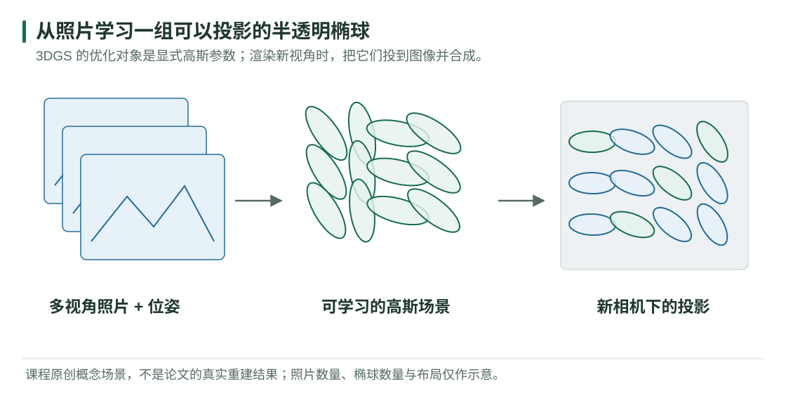
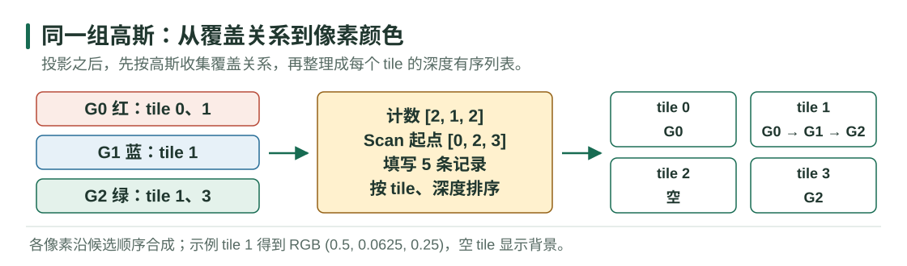
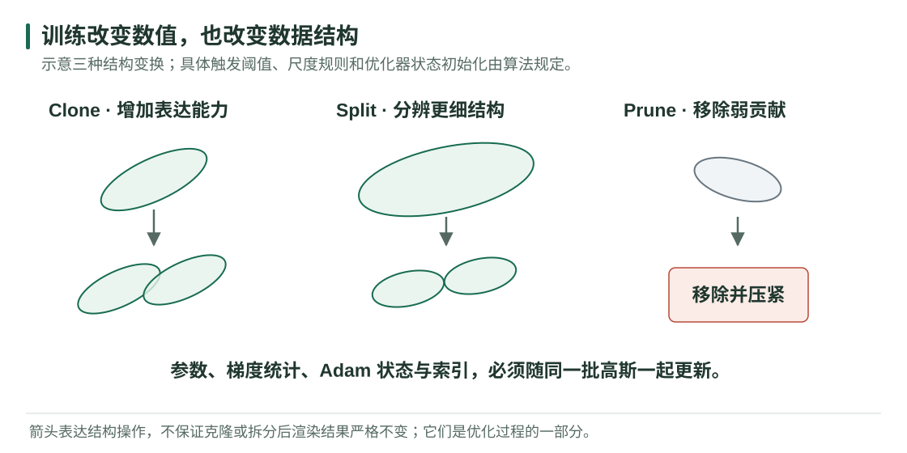
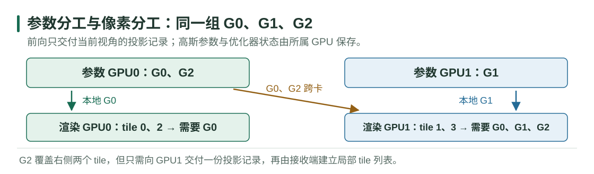

3D Gaussian Splatting：从经典渲染到单卡与多卡优化
从高斯投影和有序合成建立经典 3DGS 流水线，继而理解 HiGS 的分层渲染与 Grendel-GS 的分布式训练。
学完这一讲，你能
- 沿投影、建表、排序、合成解释经典 3DGS
- 用小例子解释 HiGS 的分层渲染与有序批次合并
- 解释 Grendel-GS 的参数和像素分工、梯度归还与动态均衡
任务与场景表示
3DGS：从场景表示到单卡与多卡优化
从多张照片学习一个场景，再从新的相机位置生成图像。沿三个问题展开：
| 内容 | 遇到的问题 | 本讲主线 |
|---|---|---|
| 经典 3DGS | 一群三维高斯怎样生成图像、怎样从照片中学习？ | 三个高斯 → 投影、建表、合成 → 训练 |
| NVIDIA HiGS | 单卡中重复记录多，少数密集区域拖慢整帧 | 分层建表、复用、按工作量拆分任务 |
| Grendel-GS | 场景与训练状态超过单卡容量，多卡又忙闲不均 | 参数分片、按需交付、动态均衡 |
HiGS 重点优化前向渲染，Grendel 重点组织多卡训练；两者是不同方向的工作。
从多张照片学习场景，再合成新的视角
围着一辆自行车拍摄多张照片，记录各自的相机位置与方向。我们希望换到一个没有拍过的位置，也能生成合理的图像。
3DGS 用许多可调整的三维高斯描述自行车和周围场景：从训练相机看过去，合成的图像应尽量接近照片。
先把当前高斯当作已知，理解如何渲染一张图；再把图像误差传回参数，形成训练闭环。
原论文读图：图像质量、训练成本与渲染速度
先看自行车辐条和细小结构，再把每张图下的数字与实际任务对应。
论文出处与图片说明
3D Gaussian Splatting for Real-Time Radiance Field Rendering
Bernhard Kerbl, Georgios Kopanas, Thomas Leimkühler, George Drettakis
作者项目页 PDF（低体积版），获取于 2026-09-14 · PDF 第 1 页
从原 PDF 裁切图区并转为 PNG；保留图内标注、坐标轴和数据，未重绘。
作者公开论文；原文版权声明见论文首页
- 是谁生成的？ InstantNGP、Plenoxels、Mip-NeRF360 是对照方法；Ours 指本论文的 3DGS，Ground Truth 是用于比较的真实图像。
- 三个指标： Train 为训练用时，越短成本越低；PSNR 是峰值信噪比（dB），越高表示像素误差越小；fps 是每秒渲染帧数，越高显示越流畅。
- 两列 Ours： 分别训练 6 与 51 分钟，PSNR 从 23.6 升至 25.2，渲染速度从 135 降至 93 fps。这是不同训练预算的结果，质量、训练成本、渲染速度要一起看。
接下来用三个高斯拆开这套渲染过程，先理解一张图如何生成。
本讲源码：用小数据追踪整条流水线
以下文件用于教师课堂演示，核心代码在后续页面逐步展示；命令在对应演示目录中运行。
| 文件 | 做什么 |
|---|---|
gs_pipeline_demo.py | 三个高斯、四个 tile：计数、Scan、排序、合成与路由 |
splat_reference.py | 二维像素与梯度的独立参考校验 |
python gs_pipeline_demo.py
两者只用 Python 标准库。它们解释数值与数据组织，不需要下载场景；HiGS 完整渲染与 Grendel 多卡训练的性能依据来自论文，不能由此小模型的运行速度推断。
训练输入：照片、相机与初始点云
| 输入 | 用途 |
|---|---|
| 多视角照片 | 告诉模型每个训练视角应该看到什么 |
| 相机内参和位姿 | 确定从哪里看、怎样投影到图像 |
| 初始稀疏点云 | 为高斯提供初始位置，随后再优化与增密 |
原始工作通常利用 SfM（从多张图像估计相机与三维点）得到初始化。本讲固定相机，学习静态场景。
新视角质量要在未参与训练的相机视角上检查。原始 3DGS 项目
高斯表示：可以调整的半透明小云团
把一个高斯想成中心浓、边缘淡，可以拉长和旋转的半透明小云团：位置决定放在哪里，形状决定铺多宽，颜色与不透明度决定对图像的贡献。

先用固定 RGB 理解颜色。许多云团共同合成图像，再由照片误差推动它们的位置、形状和颜色变化。
高斯表示、投影与贯穿算例
贯穿全讲的例子：三个高斯、四个图像区域
把图像切成四个小矩形区域，称为 tile：上排是 0、1，下排是 2、3。为先看清流程，给出当前视角投影后的结果：
| 高斯 | 颜色 / 深度 | 覆盖 tile | 示例像素 alpha |
|---|---|---|---|
| G0 | 红 / 1 | 0、1 | 0.5 |
| G1 | 蓝 / 2 | 1 | 0.5 |
| G2 | 绿 / 3 | 1、3 | 0.25 |
深度越小越靠前。Alpha 是该高斯在指定像素处的不透明度；0.5 表示这一层保留一半透射率。
这里只追踪每个 tile 的一个示例像素，并假定它受到表中候选影响；真实程序要逐像素计算 alpha。后面解释这些投影与贡献从何而来。
先走一遍流程：从三个高斯到一张图

前半段询问“这个高斯影响哪里”，后半段询问“这个像素需要谁”。 建表和排序负责转换这两种组织方式。
tile 1 按红 → 蓝 → 绿合成；tile 2 没有候选，显示背景。接下来逐步解释投影、颜色计算和中间的索引表。
一个高斯：中心影响强，边缘逐渐减弱
前面直接给了示例像素的 alpha。它来自高斯自身的不透明度 × 该像素处的高斯响应。
投影可想成一块软椭圆：中心强、边缘弱。若沿一条轴观察，宽度用标准差 σ 表示，基础 opacity 为 0.5：
| 距中心的距离 | 高斯响应 | 该像素的 alpha |
|---|---|---|
| 0 | 1 | 0.5 |
| σ | 约 0.607 | 约 0.303 |
| 2σ | 约 0.135 | 约 0.068 |
同一个高斯影响不同像素时，alpha 通常不同。 σ 描述宽度，不是一个硬边界。
高斯的可学习参数：位置、形状、透明度与颜色
| 参数 | 作用 | 常见存储 |
|---|---|---|
| 中心 | 放在空间的哪里 | 3 个坐标 |
| 尺度与旋转 | 椭球的长短轴与朝向 | 3 个尺度、4 个四元数分量 |
| opacity | 控制基础不透明度 | 1 个数 |
| 球谐 SH 系数 | 用一组方向函数表达随视角变化的颜色 | 最高阶数 时为 个数 |
初次理解可先把颜色当作固定 RGB；SH 可类比“为不同观察方向拟合颜色的基函数展开”。例如 时，每个高斯共 59 个标量。
这些是显式场景参数，通过图像损失反向更新，而不是每次查询都运行一个大型 MLP。
投影：距离改变位置，也改变覆盖范围
同一个云团，换一个观察方向，屏幕上的软椭圆会变形；离相机更远时，通常投得更小。
例如固定焦距 100 像素、主点 (0,0)：中心 (1,0,4) 投到 (25,0)；深度改成 8，投到 (12.5,0)。
用公式表示：
是相机坐标， 是像素单位焦距， 是主点。在光轴附近，空间标准差 0.2 的横向轴，深度 4 时约投成 5 像素，深度 8 时约 2.5 像素。
操作足迹：距离与方向怎样改变工作量
均值位于光轴，f=240 px、短轴标准差 0.4，仅绕光轴旋转；画的是局部线性投影的一倍标准差轮廓，未加像素滤波项，不是实现采用的截断半径。
同一个高斯离相机更近时，覆盖更多像素，也可能触及更多 tile。参数数量没变，渲染工作却发生变化。
无限支撑的高斯，为什么能只处理有限区域？
数学上的高斯在任意远处都非零；实现需要用有限半径、opacity 阈值等规则裁剪弱贡献。
屏幕足迹常先用保守包围区域找候选 tile，再在像素处计算实际椭圆响应。包围盒覆盖并不代表每个像素都产生显著贡献。
半径选择与截断阈值同时改变工作量和近似误差，必须作为渲染契约记录。
有序透明合成
先算红、蓝两层：前面的层会遮住后面的层
看 tile 1 的一个示例像素，先处理 G0（红）与 G1（蓝），两者 alpha 都为 0.5，背景为黑色。
| 步骤 | 本层之前剩余的透射率 T | 本层颜色权重 | 本层之后剩余 T |
|---|---|---|---|
| G0 红色 | 1 | 1 × 0.5 = 0.5 | 0.5 |
| G1 蓝色 | 0.5 | 0.5 × 0.5 = 0.25 | 0.25 |
红色占 0.5，蓝色只能从剩下的一半中再取一半，所以当前 RGB 是 (0.5, 0, 0.25)。
若交换红、蓝顺序，结果变为 (0.25, 0, 0.5)。顺序会改变颜色，不能直接平均。 下一步接上 G2。
再加绿色层：完成同一个像素的颜色
红、蓝两层算完后，还剩 T = 0.25。后面的 G2 是绿色，alpha = 0.25：
绿色的实际权重 = 0.25 × 0.25 = 0.0625
最终 RGB = (0.5, 0.0625, 0.25)
最终剩余 T = 0.25 × (1 − 0.25) = 0.1875
| 示例像素所在区域 | 候选顺序 | 黑背景上的最终 RGB |
|---|---|---|
| tile 0 | G0 | (0.5, 0, 0) |
| tile 1 | G0 → G1 → G2 | (0.5, 0.0625, 0.25) |
| tile 2 | 空 | (0, 0, 0) |
| tile 3 | G2 | (0, 0.25, 0) |
绿色在 tile 1 被前面的红、蓝遮挡，在 tile 3 则没有这两层。
把手算写成公式：累计颜色与剩余透射率
刚才每一步只做两件事：加上当前层可见的颜色，再更新还剩多少透射率。
初始化颜色 、透射率 。按近到远处理第 i 个高斯：
是 RGB 向量； 是它在当前像素的不透明度。先用旧 T 累加颜色，再更新 T。 全部处理完，再加上 。
把循环展开，就是带顺序的加权和：
交互合成：观察前景如何压住背景
当红层在前面时，提高其 alpha 会同时增加红色贡献、压低后面的蓝色贡献。
像素合成代码：沿用红、蓝、绿三层
ids 按近到远给出高斯 ID；alpha[g] 是示例像素的不透明度，rgb[g] 是颜色。直接对应刚才的三层手算：
ids, alpha = [0, 1, 2], [0.5, 0.5, 0.25]
rgb = [(1, 0, 0), (0, 0, 1), (0, 1, 0)]
color = [0.0, 0.0, 0.0]
T = 1.0
for g in ids:
weight = T * alpha[g]
for channel in range(3):
color[channel] += weight * rgb[g][channel]
T *= 1.0 - alpha[g]
print(color, T)
channel=0,1,2 对应 RGB，输出 [0.5, 0.0625, 0.25] 0.1875。这里背景为黑色；像素之间可以并行，同一像素按深度累加。
经典流水线：从高斯到像素
从高斯到像素：为什么需要建表和排序？
颜色怎么算已经清楚，但不能让每个像素都检查场景里的所有高斯。先按 tile 找到候选，再让像素检查候选中的实际贡献。
| 原始组织：这个高斯覆盖哪里？ | 渲染需要：这个 tile 收到了谁？ |
|---|---|
| G0 → 0、1；G1 → 1；G2 → 1、3 | 0 → G0；1 → G0、G1、G2；2 → 空；3 → G2 |
数一数每个高斯需要几条记录 → Scan 分配写入位置
↓
填写 (tile, depth, ID) → 按 tile 与深度排序 → 各 tile 渲染
前半段按高斯独立，后半段按像素独立；中间的关系表负责转换。
计数与 Scan：为五条交叠记录分配位置
沿用三个高斯的覆盖关系，故意按 [[1,0], [1], [3,1]] 遍历 tile，便于观察后面的排序：
| 高斯 | 记录数 counts | exclusive offset | 写入位置 |
|---|---|---|---|
| G0 | 2 | 0 | 0、1 |
| G1 | 1 | 2 | 2 |
| G2 | 2 | 3 | 3、4 |
第七讲的独占 Scan 在这里把 counts [2,1,2] 变成 offsets [0,2,3]。
总长度是 5，不是 3：一个高斯可以输出多条 (tile, depth, Gaussian ID) 记录；各自写区间互不重叠。
排序之后：按高斯组织，变成按 tile 组织
| 位置 | 排序前 (tile, depth, ID) | 排序后 (tile, depth, ID) |
|---|---|---|
| 0 | (1,1,G0) | (0,1,G0) |
| 1 | (0,1,G0) | (1,1,G0) |
| 2 | (1,2,G1) | (1,2,G1) |
| 3 | (3,3,G2) | (1,3,G2) |
| 4 | (1,3,G2) | (3,3,G2) |
主键是 tile ID，次键是深度。tile 1 的 G0、G1、G2 从位置 0、2、4 聚到连续位置 1、2、3，并按深度排列；tile 2 没有记录。
只重排记录与 ID，不需要为每条记录复制完整三维参数和优化器状态。每个 block 通过 [begin,end) 找到自己的列表。
计数、Scan 与记录填写的完整过程
输入 tiles=[[1,0],[1],[3,1]]，depth=[1,2,3]。这是顺序 Python 参考，GPU 上分别对应并行计数、Scan 和填充。
tiles = [[1, 0], [1], [3, 1]]
depth = [1, 2, 3]
counts = [len(touched) for touched in tiles]
offsets, total = [], 0
for count in counts:
offsets.append(total)
total += count
records = [None] * total
for g, touched in enumerate(tiles):
for j, tile in enumerate(touched):
records[offsets[g] + j] = (tile, depth[g], g)
records.sort() # 先按 tile，再按 depth 排序
g 是高斯 ID，j 是其覆盖列表中的位置。随后按 tile 取出有序 ID，调用前面的像素合成循环。
Shared memory：一批高斯，供整块像素复用
以 tile 1 为例，候选列表为 [G0,G1,G2]。实际 tile 内有很多像素，每个像素都可能需要这些高斯的屏幕中心、椭圆参数、颜色与 opacity。
global 中的候选与投影参数
↓ block 线程合作加载一批
shared：[G0 数据 | G1 数据 | G2 数据]
↓ ↓
像素线程 p0 像素线程 p1 ...
算自己的 alpha 和颜色 算自己的 alpha 和颜色
共享的是候选参数，每个像素的 alpha、颜色与 T 由自己的线程维护。原始实现常取 16×16 像素、一个 block 256 线程。原始 CUDA 实现
协作加载：一个像素结束，不等于这个线程可退出
部分像素可能已经接近不透明，另一些像素仍需下一批高斯。提前结束的像素可以停止自己的颜色累加，但 CTA 还可能需要它参与 shared 搬运与同步。
因此常见写法保留 done 标志，用全体投票判断是否整块结束，而不是让部分线程在后续 __syncthreads() 前直接 return。
完整动画：一张图像如何由高斯生成
从三维中心到屏幕中心
| 高斯 | 三维中心 (X,Y,Z) | 屏幕中心 (u,v) |
|---|---|---|
| G0 · 红 | 0, -0.375, 1 | 等待投影 |
| G1 · 蓝 | 0.75, -0.75, 2 | 等待投影 |
| G2 · 绿 | 1.125, 0, 3 | 等待投影 |
形状由三维协方差在中心附近投影；右图按实际像素位置计算响应。
跟踪像素 (5,2) · tile 1
等待建表、排序，再领取这个 tile 的候选。
| 当前层 | alpha | 旧 T | 权重 T×alpha |
|---|---|---|---|
| G0 · 红 | — | — | — |
| G1 · 蓝 | — | — | — |
| G2 · 绿 | — | — | — |
剩余 T = 1
把建表和颜色合成接成完整过程
课堂程序 gs_pipeline_demo.py 中，build_records 封装计数、Scan 与排序，render_pixel 封装前面的三色累加。默认使用同一组颜色与 alpha。
from gs_pipeline_demo import build_records, render_pixel
tiles, depths = [[1, 0], [1], [3, 1]], [1, 2, 3]
counts, offsets, records = build_records(tiles, depths)
for tile in range(4):
ids = []
for record_tile, depth, g in records:
if record_tile == tile:
ids.append(g)
color, T = render_pixel(ids)
print(tile, ids, color, T)
records 已排序，所以筛出的 ids 仍按深度排列。此 Python 用循环展示连接关系；GPU 根据每个 tile 的连续区间并行处理。
运行完整流程，对照图中的五条记录
python gs_pipeline_demo.py
Counts: [2, 1, 2] Offsets: [0, 2, 3] Records: 5
Tile 1: G[0, 1, 2] -> RGB [0.5, 0.0625, 0.25], T=0.1875
Tile 2: G[] -> RGB [0.0, 0.0, 0.0], T=1.0000
Checks: PASS ...
上面摘取建表与渲染的关键行。G[0,1,2] 是候选高斯 ID，T 是剩余透射率；程序也检查空 tile、交换前后顺序和分批合并。
训练闭环与不规则工作量
一次训练迭代：先渲染，再把误差送回参数
选一张训练照片与相机
↓
用当前高斯渲染预测图像
↓
预测图像与照片比较，得到 loss
↓
反向传播：像素 → 投影参数 → 三维参数
↓
优化器更新；必要时增密或剪枝
例如某块区域应更红：误差可能推动红色分量、opacity、位置或尺度变化，具体由链式求导决定。
渲染一个新视角只需要前向；训练还需要梯度、优化器状态与场景结构更新。 这一区分也用于理解 HiGS 与 Grendel 的目标。
原论文读图：渲染流水线怎样成为训练闭环？
把前面“投影 → tile 建表与排序 → 颜色合成”放回完整训练流程。
论文出处与图片说明
3D Gaussian Splatting for Real-Time Radiance Field Rendering
Bernhard Kerbl, Georgios Kopanas, Thomas Leimkühler, George Drettakis
作者项目页 PDF（低体积版），获取于 2026-09-14 · PDF 第 5 页
从原 PDF 裁切图区并转为 PNG；保留图内标注、坐标轴和数据，未重绘。
作者公开论文；原文版权声明见论文首页
- 黑箭头 Operation Flow（操作流程）： SfM Points（重建点云）→ Initialization（初始化高斯）→ Projection（按 Camera 相机投影）→ Differentiable Tile Rasterizer（可微分块光栅器）→ Image（图像）。建表、排序、合成都在 Rasterizer 内。
- 蓝箭头 Gradient Flow（梯度回传）： 图像与照片比较后，误差经光栅器、投影回到三维参数；方向与生成图像相反。
- 下方 Adaptive Density Control（自适应密度控制）： 利用训练统计量决定增密或剪枝，再改变高斯集合。它调整的是数量与分布，随后会看 Clone / Split。
先沿蓝箭头解释梯度怎样返回，再看表示不足时为什么需要增加高斯。
图像误差怎样回到高斯参数？
损失先产生像素颜色梯度；透明合成反向得到颜色与 alpha 的梯度；再经 footprint、投影、协方差参数化，回到 3D 参数。
同一个高斯影响多个像素，因此其梯度需要汇总。结构变化与排序本身通常不按连续可微运算处理。

课程原创绘图；点击图片可查看原图。
反向的热点：许多像素写向同一个高斯
前向每个像素写自己的颜色，冲突较少；反向多个像素会累加到相同均值、颜色、opacity 等梯度。
常见实现采用原子加，也可以研究 warp/block 内预归约再写回。减少原子次数可能增加寄存器、shared 或无效计算。
每种方案都要保持参与 mask 正确，并接受或控制浮点归约顺序的变化。
增密与剪枝：细节不足时，调整高斯的数量
只移动或改色还不够：有的区域缺少细节，有的高斯过大，把细结构画糊了。

小高斯覆盖不足时可 clone（复制），大高斯过粗时可 split（拆分），贡献很小等不合适的高斯可 prune（剪除）。具体判断结合位置梯度、尺度与 opacity 等条件。
训练既改变参数值，也改变高斯数量与覆盖关系。 这会增加存储、建表和渲染成本。
原论文读图：Clone 与 Split 解决不同的表示不足
论文出处与图片说明
3D Gaussian Splatting for Real-Time Radiance Field Rendering
Bernhard Kerbl, Georgios Kopanas, Thomas Leimkühler, George Drettakis
作者项目页 PDF（低体积版），获取于 2026-09-14 · PDF 第 6 页
从原 PDF 裁切图区并转为 PNG；保留图内标注、坐标轴和数据，未重绘。
作者公开论文；原文版权声明见论文首页
黑色轮廓是要重建的结构，绿色是当前高斯覆盖；每行从左到右读。
- 上行 Under-Reconstruction（覆盖不足）： 小高斯只覆盖局部，Clone（复制）增加表示，再继续调整位置和形状。
- 下行 Over-Reconstruction（覆盖过宽、过粗）： 大高斯越过结构边界，Split（拆分）用多个较小高斯表达细节；这里不指机器学习中的过拟合。
- Optimization Continues（继续优化）： 复制或拆分后还要学习，右侧才逐渐贴合轮廓。本图只画两种增密，prune（剪枝）用于移除不合适的高斯。
高斯变多，投影、记录和排序的工作也会变多。下一页用高斯数与交叠记录数来量化这些成本。
从经典流程看瓶颈：高斯数与交叠记录数
小例子只有 N = 3 个高斯，却有 R = 5 条 tile 记录。场景变大后，两种规模都会影响成本。
| 哪个量变大 | 增加哪些工作 |
|---|---|
| 高斯数 N | 参数与训练状态、投影计算 |
| 高斯–tile 交叠记录数 R | 记录存储、建表与排序 |
| 某个 tile 的候选列表特别长 | 该区域可能形成渲染长任务 |
容量算例：500 万高斯、平均各覆盖 8 个 tile → 4000 万条记录。每条按 8 B 排序键 + 4 B ID 计，一份约 480 MB，两份排序缓冲约 960 MB。
接下来先解决单卡渲染中的重复记录与长任务，再考虑场景和训练状态的多卡分担。
HiGS：单卡内部的分层渲染
HiGS 的动机：建表与渲染偏好不同的分块尺度
前面为每个 tile 登记候选，再让像素逐项检查。同一个 tile 尺寸同时决定了两种成本：
| tile 尺寸 | 建表与排序 | 像素渲染 |
|---|---|---|
| 较小 | 一个高斯跨更多块，重复记录较多 | 覆盖筛选较精细 |
| 较大 | 一个高斯跨的块更少 | 一个像素可能检查更多与自己无关的候选 |
例如，一个高斯横跨四个小块，要在四份列表中登记；合成大块后只登记一次，但大块里远处的像素可能根本不受它影响。
HiGS 将两种尺度分开：大宏块负责建表与排序，小渲染块负责像素计算。 NVIDIA HiGS
一个具体例子：共享列表，再筛选各自候选
仍用三个高斯与四个区域。现在把四个细渲染块合成一个宏块：
| 细块 | 实际相交的高斯 |
|---|---|
| 左上 | G0 |
| 右上 | G0、G1、G2 |
| 左下 | 空 |
| 右下 | G2 |
直接为四个细块建表，需要 5 条记录。粗层列表只存 G0、G1、G2 共 3 项；渲染时筛选每个细块的候选，仍得到上表。
省掉的是重复建表与排序，不是省掉实际应有的像素贡献。 这是教学算例，非论文测速。
分层组织：公共列表与细块筛选
宏块先建立公共列表并按深度排序；渲染时，再筛选各小块需要的候选，复用已加载的数据。
这样减少重复建表与排序，同时保持较细的像素工作范围。但区域之间的候选数量仍可能差很多。
原论文读图：密集区域为何拖慢整帧？
上一页保留了一个问题：共享列表以后，密集区域仍可能形成长任务。
论文出处与图片说明
HiGS: A Hierarchical Rendering Architecture for Real-Time 3D Gaussian Splatting
Dawid Pająk, Martin Bisson, Rodolfo Lima
arXiv:2606.00352v1 · PDF 第 1 页
从原 PDF 裁切图区并转为 PNG；保留图内标注、坐标轴和数据，未重绘。
arXiv 非独占分发声明；© 2026 NVIDIA，原作者保留版权
左图场景，中图 gsplat 基线，右图 HiGS。 颜色表示每个 tile 的覆盖高斯数除以处理它的并行工作单元数；色标 分别为 10、100、1000，是对数刻度。
桌面在中图很亮，表示少数单元承担大量工作；右图为密集区域增加工作单元，每单元负担降低。高斯仍在，只是重新分工。这里数的是负载，不是直接测得的毫秒。
262 / 1124 FPS 是论文 RTX PRO 6000 Blackwell Max-Q 在该 1080p 场景的每秒帧数。下一页看长列表怎样拆出更多任务。
HiGS：把密集区域拆成更多可调度任务
教学例子：两个宏块分别有 2、10 个高斯候选，一项工作只能占用一个执行单元。
| 组织方式 | 任务长度 | 理想的最慢任务 |
|---|---|---|
| 一个宏块一个任务 | 2、10 | 10 |
| 每批最多 2 个候选 | 2、2、2、2、2、2 | 2 |
HiGS 以 宏块 × 高斯批次 组织工作，密集区域能产生多个并行任务，而不是只让一个任务拖长尾。
表中假设执行资源足够，未计重复处理与合并成本，不能直接推出 5 倍实测加速。HiGS 论文
原论文读图：把一个长任务切成多个短任务
把上一页“每批最多两个候选”的小例子，对应到论文实际的 1024 个高斯一批。
论文出处与图片说明
HiGS: A Hierarchical Rendering Architecture for Real-Time 3D Gaussian Splatting
Dawid Pająk, Martin Bisson, Rodolfo Lima
arXiv:2606.00352v1 · PDF 第 6 页
从原 PDF 裁切图区并转为 PNG；保留图内标注、坐标轴和数据，未重绘。
arXiv 非独占分发声明；© 2026 NVIDIA，原作者保留版权
- 左：Render tile (1 row) 是沿图像一行的细块编号；Gaussians per tile 是每块候选数。One thread block per tile 表示每块一个 CTA，bottleneck 箭头标出约 2500 个候选的最长任务。
- 右：Macro-tile (1 row) 改为宏块编号；整柱是候选总量，白线切出批次。Batch bound (1024) 是每批上限，每段可交给一个 CTA；颜色也表示高斯数量，不是耗时。
宏块范围更大，柱子自然可能更高；应看长柱被切成了多少可并行的小段，而非直接比较左右柱高。 下一页把空间分块、深度批次和线程块放到同一张图里。
原论文读图：从宏块到批次，再到像素
论文出处与图片说明
HiGS: A Hierarchical Rendering Architecture for Real-Time 3D Gaussian Splatting
Dawid Pająk, Martin Bisson, Rodolfo Lima
arXiv:2606.00352v1 · PDF 第 4 页
从原 PDF 裁切图区并转为 PNG；保留图内标注、坐标轴和数据，未重绘。
arXiv 非独占分发声明；© 2026 NVIDIA，原作者保留版权
- Frame → Macro-tiles：图像分宏块。 一个宏块包含 8×4 个 Render tiles（细渲染块），在宏块内建表、按深度排序。
- Macro-tile → Processing units：列表切批次。 depth 箭头从近到远，每个 Batch 最多 1024 个高斯；1 CTA per batch 表示一个线程块负责一批。
- Processing unit → Render tiles：筛选并复用。 Per-tile visibility masks 记录每个细块需要哪些候选；CTA 内的 worker groups（线程小组）领取细块，复用本批已加载数据。
- Render tile → Pixels：逐像素合成。 每个细块为 8×8 像素，alpha blending 就是前面的有序颜色累加。
Local storage 是 CTA 内共享内存、寄存器等暂存的统称，复用发生在本 CTA 内。同一像素得到多个深度批次的结果后，下一页再把它们接成最终颜色。
拆成两个批次，怎样接回原来的颜色？
沿用 tile 1：前批处理 G0（红）、G1（蓝），后批处理 G2（绿）。两批独立计算，先都不计入外部前景的遮挡。
| 批次 | 本批累计颜色 C | 本批剩余透射率 T |
|---|---|---|
| 前批 G0、G1 | (0.5, 0, 0.25) | 0.25 |
| 后批 G2 | (0, 0.25, 0) | 0.75 |
后批绿色还要穿过前批，所以实际贡献是 0.25 × 0.25 = 0.0625；最终 RGB 仍为 (0.5, 0.0625, 0.25)，剩余 T 为 0.25 × 0.75 = 0.1875。
只把两批 RGB 相加，会错误地保留 0.25 的绿色。每批必须同时返回颜色 C 和透射率 T，合称 RGBT（RGB 颜色 + T）。
把批次合并写成公式与代码
前批返回 ，后批返回 。刚才的手算对应：
复用课堂程序中已讲过的 render_pixel，核对同一像素：
from gs_pipeline_demo import render_pixel
C0, T0 = render_pixel([0, 1])
C1, T1 = render_pixel([2])
C = [0.0, 0.0, 0.0]
for channel in range(3):
C[channel] = C0[channel] + T0 * C1[channel]
T = T0 * T1
print(C, T) # [0.5, 0.0625, 0.25] 0.1875
该合成在实数下满足结合律，但不满足交换律：可以改变分组，不能交换前后。 HiGS 论文
原论文读图：减少了哪些阶段的时间？
论文出处与图片说明
HiGS: A Hierarchical Rendering Architecture for Real-Time 3D Gaussian Splatting
Dawid Pająk, Martin Bisson, Rodolfo Lima
arXiv:2606.00352v1 · PDF 第 15 页
从原 PDF 裁切图区并转为 PNG；保留图内标注、坐标轴和数据，未重绘。
arXiv 非独占分发声明；© 2026 NVIDIA，原作者保留版权
先选面板： 左列 1080p，右列 4K；上排 tile=8×8，下排 16×16。每组灰柱为 gsplat，蓝柱为 HiGS；bicycle、garden 等是场景名称，纵轴为每帧毫秒，越低越快。
再读色段： Projection & SH eval 为投影与球谐颜色计算，Partitioning 为分区建表与排序，Rasterize 为像素光栅化。柱上 × 倍数为灰柱总时间÷蓝柱总时间。固定场景与分辨率，基线增大 tile 后，分区更省，光栅化却更贵；HiGS 分开两种尺度，变化较小。
这是 RTX PRO 6000 Blackwell Max-Q 的前向渲染实验。下一部分转向训练：还要存梯度与优化器状态，单卡装不下时怎样分给多卡？
Grendel-GS：参数、像素与跨卡交付
Grendel-GS 的动机：更大的场景需要更多存储与计算
HiGS 改善单卡前向渲染；训练还要保存梯度、优化器状态，并不断调整高斯数量。
| 场景规模增加 | 带来的压力 |
|---|---|
| 更多高斯 | 参数、梯度、Adam 状态占据更多显存 |
| 更高分辨率与更复杂覆盖 | 投影、建表、渲染与反向计算增加 |
| 训练持续增密 | 高斯数与各区域的工作量继续变化 |
Grendel-GS 让多张 GPU 分担同一个场景的存储与训练计算。 多卡既用于提高训练吞吐，也用于容纳单卡放不下的表示。
为什么仅复制模型，解决不了单卡容量限制？
普通 DDP（分布式数据并行）让每张卡保存完整模型，处理不同数据，再同步梯度。
用一份需 30 GB 的训练持久状态作容量示意：
| 分配方式 | GPU 0 | GPU 1 |
|---|---|---|
| 完整复制 | 30 GB | 30 GB |
| 高斯状态均匀分片 | 约 15 GB | 约 15 GB |
复制能分担计算，却没有降低这部分每卡存储。分片后，各卡只负责自己的一组高斯及其状态；实际峰值还包括投影、排序和通信等临时缓冲。
新的问题随之出现：负责某块图像的 GPU，可能缺少它需要的高斯。
两种分工：谁保管高斯，谁计算像素？
可以把参数所属 GPU 想成“保管材料的仓库”，把像素所属 GPU 想成“负责施工的区域”。施工所需的材料，未必都在自己的仓库里。

参数分工决定谁投影、保存优化器状态、更新参数；像素分工决定谁渲染图像区域。两者通过当前视角的投影记录连接。
三个高斯怎样交给两张 GPU 渲染？
参数分工：G0、G2 归 GPU0，G1 归 GPU1。像素分工：左列 tile 0、2 归 GPU0，右列 tile 1、3 归 GPU1。
| 渲染 GPU | 从哪些 tile 得到需求 | 需要的高斯 | 缺少什么 |
|---|---|---|---|
| GPU0 | tile 0：G0；tile 2：空 | G0 | 本地已有 |
| GPU1 | tile 1：G0、G1、G2；tile 3：G2 | G0、G1、G2 | 从 GPU0 接收 G0、G2 的投影记录 |
GPU0 交付两份投影记录后，两卡分别完成自己区域的有序合成。G2 被右侧两个 tile 使用，但先交给 GPU1 一份即可。
前向按需交付，解决“像素要用的数据不在自己这张卡”这一问题。
五条 tile 记录，不等于五份跨卡消息
沿用小例子：左列 tile 0、2 归 GPU0，右列 tile 1、3 归 GPU1；G0/G2 参数在 GPU0，G1 参数在 GPU1。
| 高斯 | 覆盖 tile | 需要该记录的 GPU | 跨卡发送 |
|---|---|---|---|
| G0 | 0、1 | 0、1 | 0 → 1，一份 |
| G1 | 1 | 1 | 无 |
| G2 | 1、3 | 1 | 0 → 1，一份 |
因此交付 4 份投影记录，其中 2 份跨卡。G2 在 GPU1 渲染两个 tile，也不必发送两次同样的投影参数。
All-to-all 表示按目标进行交换，不表示每个高斯都发给所有卡；接收端仍要生成各 tile 的候选列表。
先按目标 GPU 去重，再安排交付
下面是课堂程序中目标列表生成的展开写法。tile_gpu[t] 指 tile t 由哪张卡渲染；owners[g] 指高斯 g 的参数属于哪张卡。
tiles = [[1, 0], [1], [3, 1]]
tile_gpu, owners = [0, 1, 0, 1], [0, 1, 0]
routes = []
remote = 0
for g, touched in enumerate(tiles):
targets = set()
for tile in touched:
targets.add(tile_gpu[tile])
routes.append(sorted(targets))
for target in targets:
if target != owners[g]:
remote += 1
print(routes, remote) # [[0, 1], [1], [1]] 2
set 去掉重复目标，sorted 只让展示顺序固定。这里生成通信需求；实际 Grendel 还需交换记录及反向梯度。
跨卡传递什么：投影记录与参数状态分开
| 留在参数 owner 的长期状态 | 交给渲染 GPU 的当前视角记录 |
|---|---|
| 三维中心、尺度、旋转、SH、opacity、优化器状态 | 屏幕中心、椭圆系数、该视角颜色、opacity，以及深度/半径等辅助信息 |
椭圆系数（conic）就是二维协方差逆矩阵的参数，用来计算某个像素的高斯响应。
先按覆盖范围筛选目标、交换数量并安排缓冲，再传递变长记录；字段必须随同一个高斯 ID 一起移动。
当前视角的数据流动，不等于把整套三维参数搬到像素所在的 GPU。
原论文读图：Grendel 在两种分工之间交换数据
把前面的“双卡交付表”放进论文架构图，并扩展到一批图像。
论文出处与图片说明
On Scaling Up 3D Gaussian Splatting Training
Hexu Zhao, Haoyang Weng, Daohan Lu, Ang Li, Jinyang Li, Aurojit Panda, Saining Xie
arXiv:2406.18533v2 · PDF 第 3 页
从原 PDF 裁切图区并转为 PNG；保留图内标注、坐标轴和数据，未重绘。
CC BY 4.0
- 左侧 Render on Single GPU： 单卡保存高斯并渲染全部像素。右侧沿箭头从高斯侧走向图像侧，Partition by gaussians 表示按高斯分片，Partition by pixels 表示按像素区域分工。
- Batch of Images： 橙、蓝、绿三层是不同图像，每张图都由 GPU0 / GPU1 分区渲染；颜色不是 GPU 编号。小方格是 16×16 像素 tile。这里 batch 指一批训练图像，HiGS 的 batch 则是一段高斯列表。
- all2all： 按目标 GPU 交换当前视角的投影记录，让各像素区拿到所需候选；三维参数及优化器状态仍由原来的 GPU 保管。
这张图主要画前向的数据交付。下一页沿反方向，把多处像素产生的梯度归还给参数所属 GPU。
反向交付：把多处贡献归还给同一个参数
G0 的投影记录同时被 GPU0 与 GPU1 使用。假设它的某个字段 x 得到局部梯度 2 和 3：
GPU0 的像素 loss ── 梯度 2 ──┐
├→ 参数 owner GPU0：2 + 3 = 5
GPU1 的像素 loss ── 梯度 3 ──┘
owner 合并投影字段的梯度，再经投影反向得到三维参数梯度，执行优化器更新。2、3 为教学数值；离散 ID、排序键和半径等辅助数据不按同样方式求导。
串起一轮多卡训练：数据出去，梯度回来
参数所属 GPU：保存三维高斯与优化器状态
↓ 对当前相机投影，按覆盖范围交付记录
像素所属 GPU：建局部列表、排序、渲染自己的区域
↓ 与真实照片比较，计算损失及投影字段梯度
参数所属 GPU：收回并合并各区域的梯度贡献
↓ 经投影反向求三维参数梯度，再更新参数
进入下一轮；在合适时机增密、剪枝与均衡
以 G0 为例：参数在 GPU0 → 投影记录供 GPU0、GPU1 使用 → 梯度 2、3 回到 GPU0 合成 5 → 更新一次。 数值为教学示意。
通信关系已经清楚，接下来还要解决：两张卡分到的像素同样多，为什么仍会互相等待？
负载均衡与结果解读
把像素均分，仍可能等最慢的一张卡
HiGS 中遇到的区域工作量不均衡，在多卡上同样存在。天空区域可能只有少量贡献，前景树叶或复杂表面则需要处理很长的候选列表。高斯的投影和 opacity 还会随着训练变化。
并行步骤要等最慢的 GPU；固定 tile 数量只均衡了空间面积，没有均衡运行时间。

课程原创绘图；点击图片可查看原图。
原论文读图：同样大小的像素区域，工作量差多少？
论文出处与图片说明
On Scaling Up 3D Gaussian Splatting Training
Hexu Zhao, Haoyang Weng, Daohan Lu, Ang Li, Jinyang Li, Aurojit Panda, Saining Xie
arXiv:2406.18533v2 · PDF 第 5 页
从原 PDF 裁切图区并转为 PNG；保留图内标注、坐标轴和数据，未重绘。
CC BY 4.0
右侧 # Splatted Gaussians 表示每个 tile 渲染的高斯数量，# 意为“数量”；从蓝色约 0–200，到红色接近 1000。它是计数，不是温度、利用率或运行时间。
图中的小方格具有相同像素面积，但火车细节区域比天空处理的高斯多。均分像素数，仍会给不同 GPU 分配很不一样的工作。
计数揭示不均匀性；实际耗时还受透明度提前终止等因素影响。下一页用一组具体成本做 Scan，再按历史运行时间调整分区边界。
工作量前缀：先算数值，再选择分界
八个连续 tile 的估计耗时为 [1,1,1,1,7,7,7,7]，两张同速 GPU：
| 切分 | GPU0 的工作 | GPU1 的工作 | 等待最慢一边 |
|---|---|---|---|
| 各 4 个 tile | 28 | ||
| 前 6 / 后 2 | 18 |
总成本 32，希望每边接近 16。Scan 给出前缀 [0,1,2,3,4,11,18,25,32]，选接近 16 的合法切点 6。
真实成本来自历史运行时间；分区粒度、通信和迁移成本会限制收益。这里没有真实时间单位。
交互：区分利用率的理论模型与实测速度
固定合成工作量、同速 GPU、无通信开销；选择最接近均分工作量的合法前缀边界。Grendel 使用历史运行时间估计并迭代修正，源码的阈值取整细节与此教学模型不同。
从按数量切换到按成本，最慢工作量下降。这个收益还没扣除重新分区和通信的代价。
均衡有两层：像素运行时间与高斯持久状态
| 对象 | 为什么变化 | 调整方式 |
|---|---|---|
| 图像 tile 工作区间 | 视角与渲染复杂度变化 | 调整本轮像素任务边界 |
| 高斯参数及 Adam 状态 | 增密/剪枝造成各卡数量失衡 | 在合适时机重分布持久高斯 |
调整像素边界是重新分配“谁来画”；重分布高斯是调整“谁来保存和更新”。增密可能使某卡保存的高斯更多，因此两种均衡都需要考虑。
Grendel 实现包含增密后的高斯重分布策略；无需每轮随像素边界迁移整个场景。
原论文读图：先装得下，再讨论训练吞吐
论文出处与图片说明
On Scaling Up 3D Gaussian Splatting Training
Hexu Zhao, Haoyang Weng, Daohan Lu, Ang Li, Jinyang Li, Aurojit Panda, Saining Xie
arXiv:2406.18533v2 · PDF 第 8 页
从原 PDF 裁切图区并转为 PNG；保留图内标注、坐标轴和数据，未重绘。
CC BY 4.0
- 左图 Rubble（废墟场景）： # GPUs 为 GPU 数，Batch Size 为一次训练的图像数；格内 Throughput (imgs/sec) 为每秒训练图像数，越大越好。OOM = Out of Memory（显存不足）。固定 batch=1，1、2 卡装不下，4 卡可运行。
- 右图 Train（火车场景）： 横轴同时写 GPU 数与 BS（batch size）；蓝柱 Training Speedup 读左轴，相对 1 GPU、BS=1 的训练加速比；橙线 PSNR 读右轴，衡量测试图像质量（dB）。
16 GPU、BS=32 为 5.33×，但 GPU 数与 batch 同时改变，不能当作固定 batch 的扩展效率。两图场景不同，也不能把左侧吞吐与右侧倍率混算。
论文采用 A100 40 GB 集群。这页看“装得下与训练多快”，下一页看“增加高斯后，表示质量怎样变化”。
论文结果怎么读：容量提升与纯加速分开看
论文出处与图片说明
On Scaling Up 3D Gaussian Splatting Training
Hexu Zhao, Haoyang Weng, Daohan Lu, Ang Li, Jinyang Li, Aurojit Panda, Saining Xie
arXiv:2406.18533v2 · PDF 第 9 页
从原 PDF 裁切图区并转为 PNG；保留图内标注、坐标轴和数据，未重绘。
CC BY 4.0
- 先读横轴： # of Gaussians (Millions) 是高斯数量，1 代表 100 万；Rubble、MatrixCity Block_All、Bicycle 是三个场景。此图横轴不是 GPU 数。
- 再读双轴： 蓝线 PSNR（像素重建质量，dB）读左轴；橙线 SSIM（结构相似度）、绿线 LPIPS（感知差异）读右轴。PSNR / SSIM 越高越好，LPIPS 越低越好，不能跨轴比线条高低。
- 最后看虚线： One GPU Memory Limit 是该实验单卡显存边界。Rubble 从约 1120 万增至 4040 万高斯，PSNR 从 26.28 增至 27.28，资源也从 1 卡增至 16 卡。
这支持扩大容量可以改善表示质量；图中没有测同一模型的纯加速。回到本讲主线：先画对，再组织单卡工作，最后分担多卡训练状态。
本讲小结：同一场景，不同层次的并行设计
| 方法 | 工作单元与状态 | 核心设计 |
|---|---|---|
| 经典 3DGS | 高斯、tile 候选列表、像素颜色与透射率 | 索引重排、有序合成与可微训练 |
| HiGS | 宏块、高斯批次、细渲染块、部分 RGBT | 单卡分层复用与任务均衡，按深度合并 |
| Grendel-GS | 参数分片、像素分区、投影记录、梯度 | 多卡路由、梯度归还与动态均衡 |
贯穿三者的判断是：工作是否足够均衡，数据是否被重复搬运，合并时是否仍满足原来的数学含义。